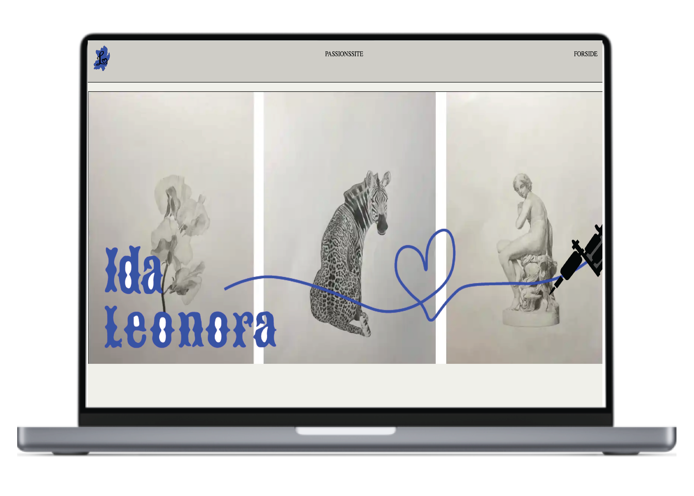

GRUNDLÆGGENDE INDHOLD
Passionsitet var første del af tema 05 'indhold'. Dette site blev lavet ud fra Leonora, som er 18 år og tattovør. På billedet ses det styletile, som passionsitet blev arbejdet ud fra. Udover sitet, skulle jeg i dette forløb også lave en passionsvideo af Leonora, ved hjælp af kamera, tripod og mikrofon og klippe videoen sammen i Premiere Pro. Det var også i dette forløb vi blev introduceret for at lave hero section, hvor vi lærte at lave lottiefiles

Virksomhedssitet var mit første gruppeprojekt. I dette tema skulle vi finde et website som trængte til lidt kærlighed, og derefter redesigne det. Min gruppe og jeg valgte en græsk restaurants hjemmeside, og valgte at tage udgangspunkt i de græske farver og designe nogle illustrationer af græsk mad. På billedet ses det styletile som vi valgte at tage udgangspunkt i til vores site.